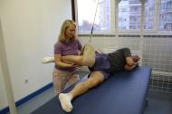
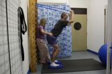
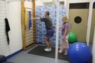

SZEMÉLYRE SZABOTT EGYÉNI GYÓGYTORNA KEZELÉSEK
Az egyéni gyógytorna hatékonyabb és eredményesebb, mint a csoportos gyógytorna. A terapeuta így közvetlenül csak egy pácienssel foglalkozik, problémáját célzott, modern terápiával kezeli.
Milyen problémán segíthet:
Kopásos ízületi megbetegedések
Degeneratív elváltozások, ízületi kopások szakszerű kezelése.
Izomegyensúly felborulása
Egyoldalú túlterhelésből adódó fájdalmak (nyak, hát, derék).
Porckorong kiboltosulás
Gerincsérv és porckorong problémák konzervatív terápiája.
Gyulladásos betegségek
Lágyrészek és ízületek gyulladásos panaszainak enyhítése.
Törések és műtétek után
Sérülések, operációk utáni átfogó funkció helyreállítás.
Idegrendszeri sérülések
Központi és perifériás idegrendszeri sérülések rehabilitációja.
A gyógytornász
Több mint 25 év tapasztalattal várja pácienseit, alkalmazva a legújabb manuálterápiás és fizioterápiás módszereket.
Vizsgálatra való felkészülés
Kérjük, hozza magával korábbi orvosi dokumentációit (röntgen, MRI), hogy a legpontosabb kezelési tervet állíthassuk össze.
Igazítás

.jpg)

